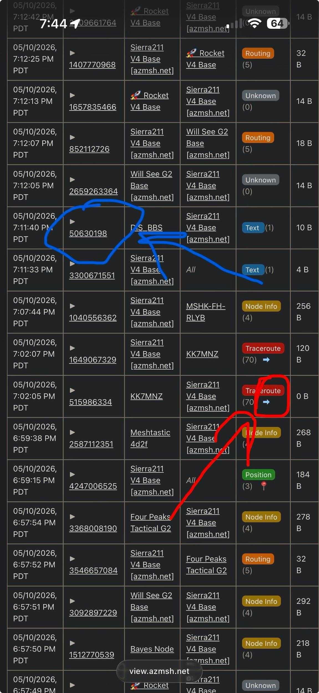
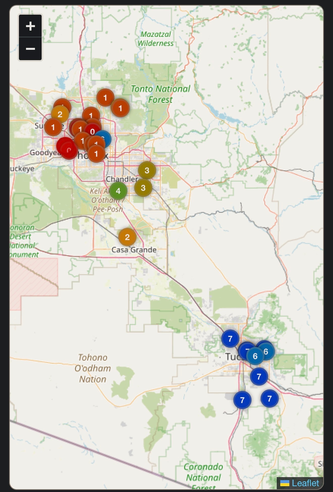
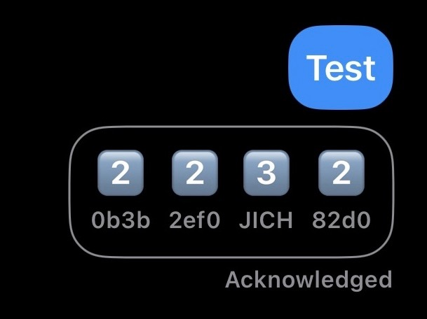
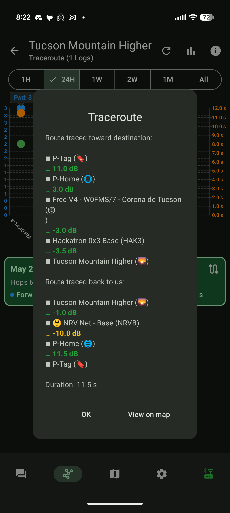
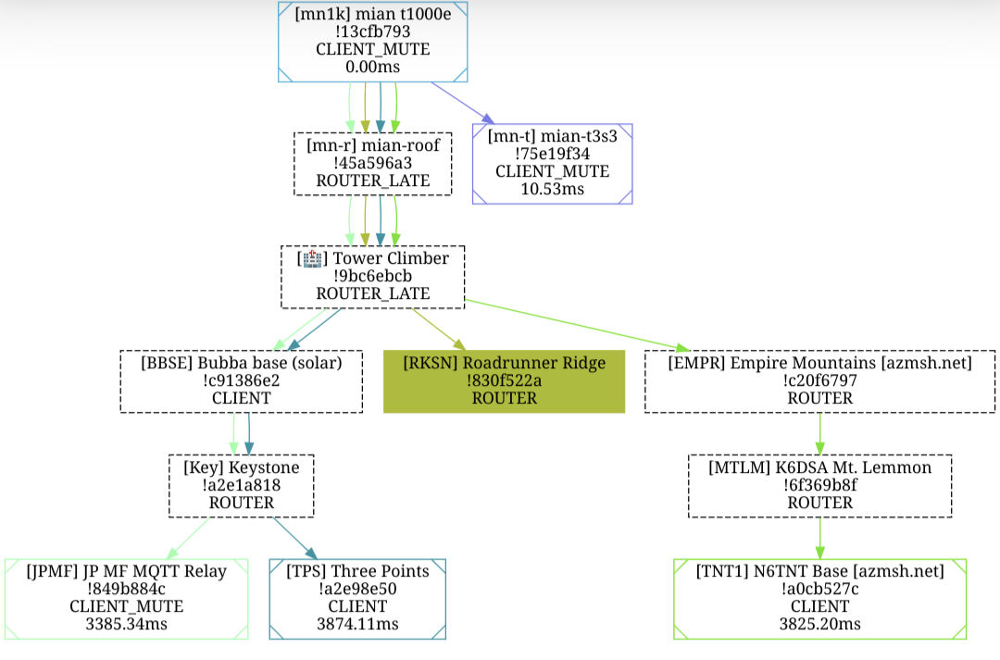

How To Test Your Setup
So you've got your node set up, the app downloaded, all your settings configured. You connected. Now what? How do you know if it's actually working, if anyone out there can hear you?
This page is the moment right after Start Here. Your radio is on, your settings are dialed in, and you're staring at the screen wondering: did I do this right?
Here's how to find out.
Step 1. Say "test" on the Mesh
Meshtastic is part art and part science. The art part is trying a lot of things and testing to see what works. Everyone's setup and location is different.
- Type
testin your primary channel. Send it. (Send it as many times as you want.) - A lot of our users run MeshMonitor which will respond automatically with a tapback emoji:


 . How many hops away that user is from you
. How many hops away that user is from you . Direct hit (no hops, they heard you straight)
. Direct hit (no hops, they heard you straight)- Got tapbacks? Congrats. You're on the mesh. Skip to Step 4.
- No tapbacks? Don't panic. Keep reading.
Step 2. Not Getting Responses? Move Around.
If test is getting crickets, the most common fixes are physical, not technical.
- Try different locations. Inside vs outside makes a huge difference. Near a window vs interior wall. Also big.
- Get higher. Height is might. Roof, balcony, second floor. Anywhere that gives your antenna line-of-sight to the sky and the surrounding terrain.
- Step outside completely. Even a 30-second outdoor test will tell you whether your indoor location is the problem.
- Try at different times of day. The mesh ebbs and flows. If no one's around when you test, you'll hear nothing.
Keep doing the above until you see something land. Try every location, see what works best for you.
Can receive but can't send? That's the most common snag, and it has a full fix-list
If you can see other people's messages but yours never get acknowledged (or you see Max Transmission Reached), your settings are fine; it's an RF/placement issue. The complete, ordered fix list lives in the FAQ → I can receive, but I can't send.
Step 3. Still Nothing? Check Your Settings.
The #1 issue we see new operators run into is missing a setting. Or turning something on that shouldn't be on.
Make sure every setting in the Start Here guide is configured correctly, and nothing else.
When in doubt, leave it alone
If you aren't fully sure what a setting does, don't mess with it. If you want someone to check your settings, start a thread in #i-need-help on Discord. We're happy to take a look.
Still stuck after all of the above? Work through the FAQ & Troubleshooting page; it covers the "can't send" RF fixes, the 403 map error, node-claim failures, and flashing problems in one place.
Step 4. Claim Your Node + Opt In for Diagnostics
Now that you're heard on the mesh, plug into the community side.
Claim your node. Type /node claim in Discord. This helps others know the node is yours. They can tag you when they have questions, hear you on the air, or want to know if you can hear them.
Opt in for diagnostic data. Click the  reaction in the #getting-started channel on Discord. Opting in unlocks:
reaction in the #getting-started channel on Discord. Opting in unlocks:
- More diagnostic data on your node
- Access to view.azmsh.net. Our community map and MQTT diagnostics tool
Map says \"Forbidden\" / 403? React with the pie emoji FIRST
If you open view.azmsh.net before reacting with the emoji, your browser caches the denied state and keeps showing Forbidden. React first, then open the map in an incognito window (or clear your cache/cookies for the site). Full steps: FAQ → Forbidden / 403.
Step 5. Check Your Messages and Trace Routes
Once you've opted in, search for your node on view.azmsh.net/nodelist to see what's actually happening on the air.
{kind=link}

- Red (Traceroutes): Click the arrow next to the trace routes and it'll show you the path your trace routes took. And when others trace route you. You can run trace routes by clicking on a node in the node list, scrolling down, and tapping Trace Route. You'll get a cool graph of where your trace route went trying to hit that node and get back home. You can also see these in #traceroutes on Discord.
- Blue (Message stats): Click the number ID for any text message you sent to see the stats for that specific message, including which nodes it hit on the way. You can also see your messages in #messages.
Here's what success looks like. On the MeshView map and in the Meshtastic app itself. The map shows each hop along the trace-route path; the app screenshot shows the tapback responses to a test message, with the number emoji telling you how many hops away that node was from you when they heard you. Tap any image to enlarge.
{kind=link}

{kind=link}

What a successful traceroute looks like in the Meshtastic app
You can run a traceroute directly from the Meshtastic app itself (Android, iOS, or web). Tap a node in your node list, scroll down, hit Trace Route, and you'll get a result. Every hop on the way out, every hop on the way back, with the signal strength (dB) at each step. Green = strong signal, yellow/red = weak.
You can also see your traceroutes on view.azmsh.net as a network graph. The filled, colored node is the one you successfully traced to; the surrounding dashed boxes are the hops + neighbors the trace passed through or saw along the way.
{kind=link}

{kind=link}

You're Talking on the Mesh!
Nice job. You did it! 
Here's what to do next:
- Join more channels. Hop into the topic channels on Discord for traceroutes, hardware, and the help threads.
- Sunday night chat. Join us every Sunday at 5pm on the primary channel for our weekly community chat.
- Get your friends and family on the mesh. The more nodes we have, the better the network works for everyone. Send them to Start Here to get started.